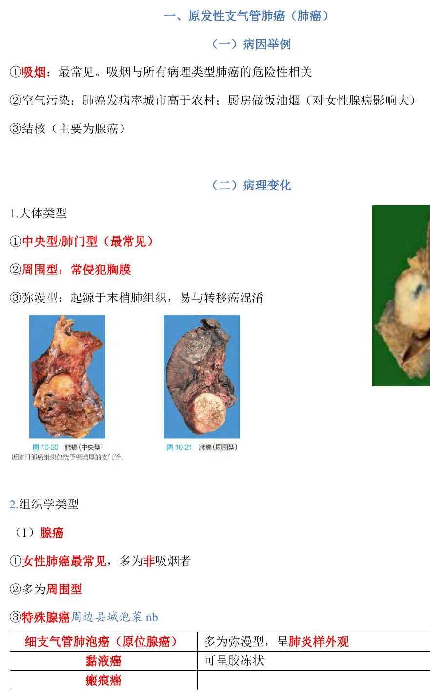
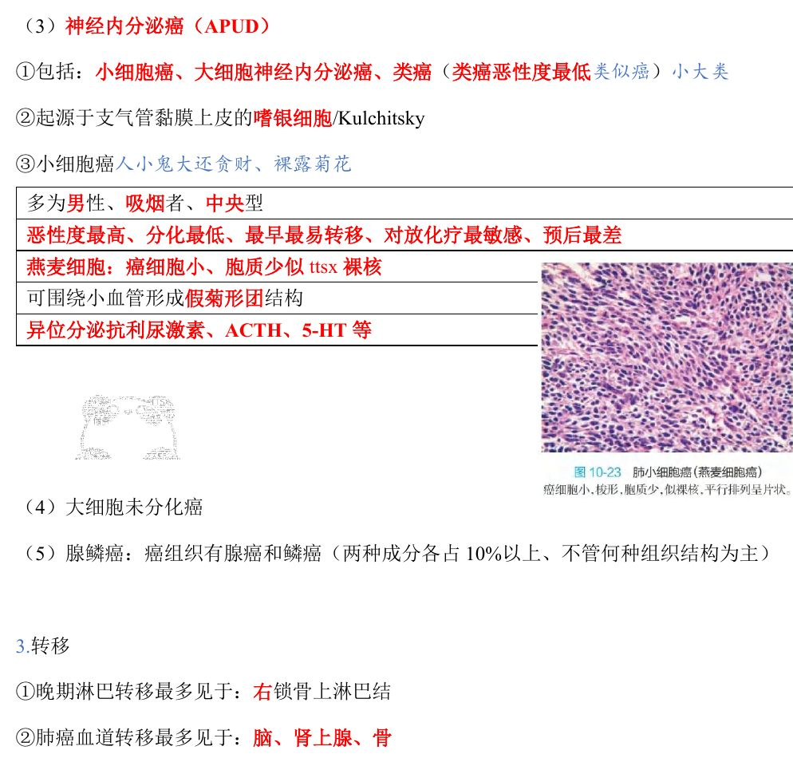
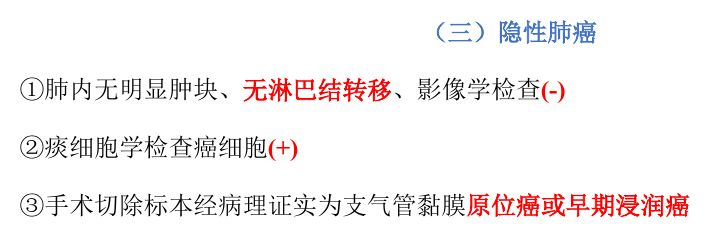
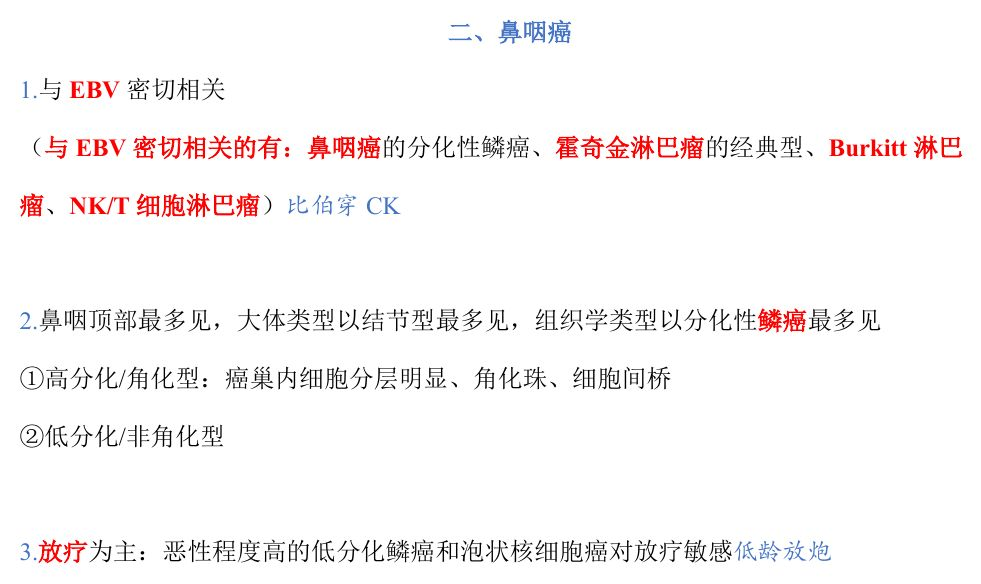
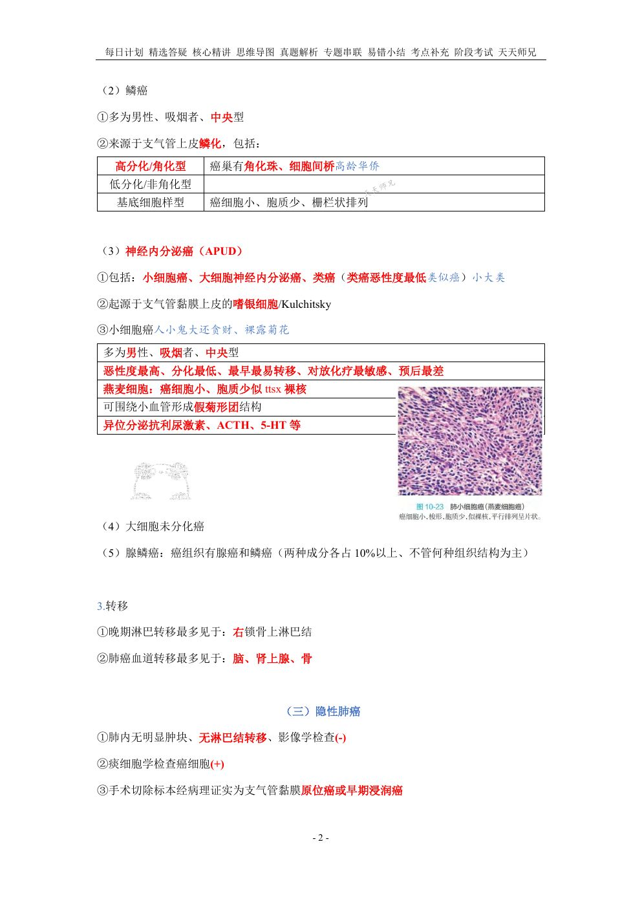
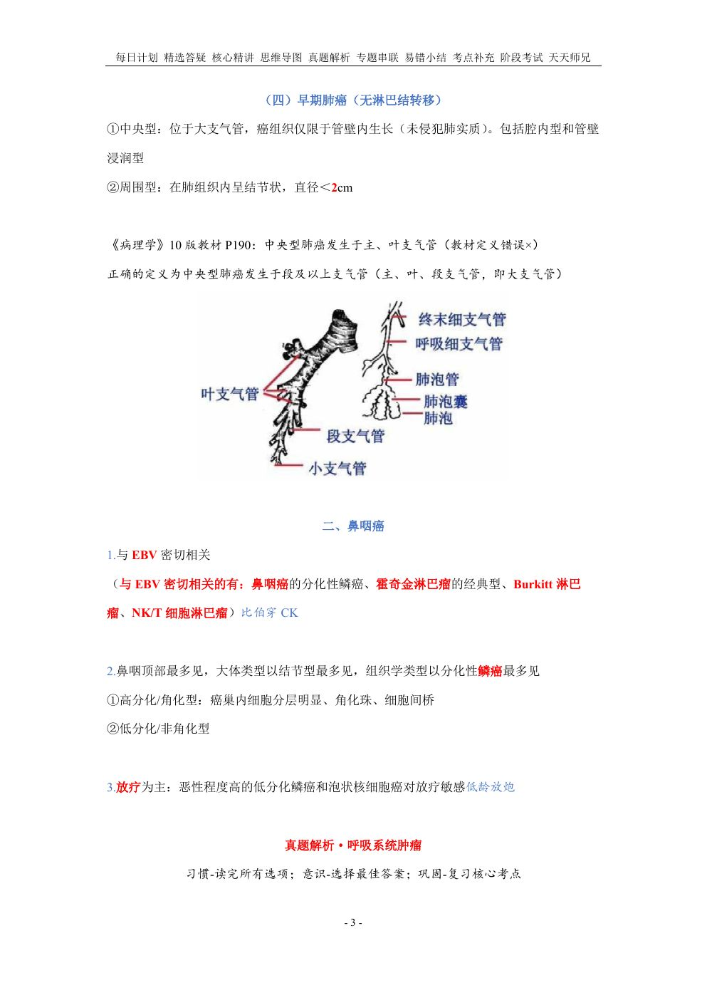
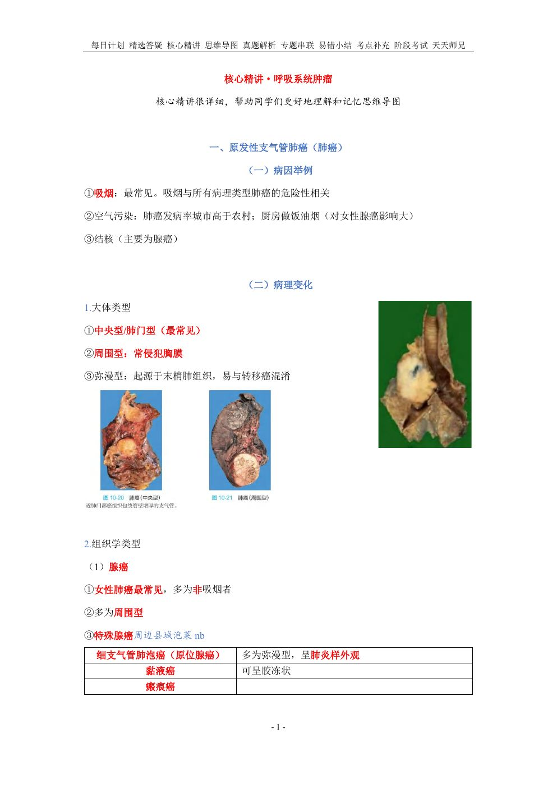
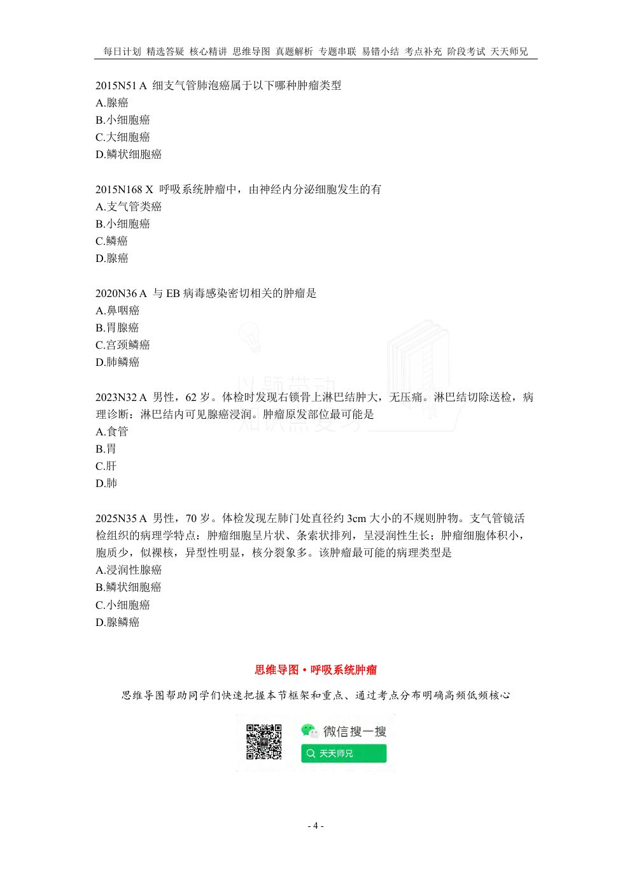

用法：A型题点选项即判；X型题先多选、再点【判卷】；答完自动展开解析。刷完本课再过一遍底部【本课速记卡】，效果最好。
一、肺癌：病因与大体类型5 题
A型·单选Q1P1 · 病因
肺癌最常见的病因是
答案与解析
答案：B
吸烟是最常见病因；吸烟与所有病理类型肺癌的危险性相关。
📖 讲义定位：P1 · 病因

📷 讲义原图 · P1 · 病因
A型·单选Q2P1 · 病因
厨房做饭油烟对女性哪种类型肺癌影响较大
答案与解析
答案：A
空气污染：肺癌发病率城市高于农村；厨房油烟对女性腺癌影响大。
📖 讲义定位：P1 · 病因
A型·单选Q3P1 · 大体类型
肺癌最常见的大体类型是
答案与解析
答案：C
中央型/肺门型最常见。
📖 讲义定位：P1 · 大体类型
A型·单选Q4P1 · 大体类型
弥漫型肺癌的特点是
答案与解析
答案：D
弥漫型：起源于末梢肺组织、易与转移癌混淆。
📖 讲义定位：P1 · 大体类型
A型·单选Q5P1 · 大体类型
周围型肺癌的特点是
答案与解析
答案：C
周围型：常侵犯胸膜。
📖 讲义定位：P1 · 大体类型
二、肺癌：组织学类型与转移10 题
A型·单选Q6P1 · 组织学
女性肺癌中最常见的组织学类型是
答案与解析
答案：D
腺癌：女性肺癌最常见、多为非吸烟者、多为周围型。
📖 讲义定位：P1 · 组织学

📷 讲义原图 · P1 · 组织学
A型·单选Q7P1 · 组织学
细支气管肺泡癌属于
答案与解析
答案：A
细支气管肺泡癌（原位腺癌）属腺癌，多为弥漫型、呈肺炎样外观。
📖 讲义定位：P1 · 组织学
A型·单选Q8P2 · 组织学
关于鳞状细胞癌，正确的是
答案与解析
答案：B
鳞癌：男性、吸烟者、中央型；来源于支气管上皮鳞化。高分化/角化型可见角化珠、细胞间桥；另有低分化/非角化型、基底细胞样型。
📖 讲义定位：P2 · 组织学
A型·单选Q9P2 · 组织学
肺癌中属于神经内分泌癌（APUD）的一组是
答案与解析
答案：C
神经内分泌癌：小细胞癌、大细胞神经内分泌癌、类癌（类癌恶性度最低）。
📖 讲义定位：P2 · 组织学
A型·单选Q10P2 · 组织学
肺癌中的神经内分泌癌起源于
答案与解析
答案：A
起源于支气管黏膜上皮的嗜银细胞/Kulchitsky 细胞。
📖 讲义定位：P2 · 组织学
A型·单选Q11P2 · 组织学
恶性度最高、分化最低、最早最易转移、对放化疗最敏感的肺癌是
答案与解析
答案：D
小细胞癌：恶性度最高、分化最低、最早最易转移、对放化疗最敏感、预后最差；多为男性、吸烟者、中央型。
📖 讲义定位：P2 · 组织学
A型·单选Q12P2 · 组织学
小细胞癌的细胞学特点是
答案与解析
答案：B
燕麦细胞：癌细胞小、胞质少似裸核；可围绕小血管形成假菊形团结构；可异位分泌抗利尿激素、ACTH、5-HT 等。
📖 讲义定位：P2 · 组织学
A型·单选Q13P2 · 组织学
腺鳞癌的诊断要求是
答案与解析
答案：D
腺鳞癌：癌组织有腺癌和鳞癌两种成分、各占 10% 以上（不管何种组织结构为主）。
📖 讲义定位：P2 · 组织学
A型·单选Q14P2 · 转移
肺癌晚期淋巴转移最多见于
答案与解析
答案：B
肺癌淋巴转移最多见于右锁骨上淋巴结；对比：食管癌、胃癌晚期易转移至左锁骨上淋巴结（Virchow）。
📖 讲义定位：P2 · 转移
A型·单选Q15P2 · 转移
肺癌血道转移最多见于
答案与解析
答案：A
肺癌血道转移最多见于脑、肾上腺、骨。
📖 讲义定位：P2 · 转移
三、隐性肺癌与早期肺癌3 题
A型·单选Q16P2 · 隐性肺癌
隐性肺癌的特点是
答案与解析
答案：C
隐性肺癌：①肺内无明显肿块、无淋巴结转移、影像学（-）②痰细胞学检查癌细胞（+）③手术切除标本病理证实为支气管黏膜原位癌或早期浸润癌。
📖 讲义定位：P2 · 隐性肺癌

📷 讲义原图 · P2 · 隐性肺癌
A型·单选Q17P3 · 早期肺癌
早期中央型肺癌的病理特点是
答案与解析
答案：C
早期中央型：限于管壁内生长（腔内型、管壁浸润型）；发生于段及以上支气管（主、叶、段支气管）。
📖 讲义定位：P3 · 早期肺癌
A型·单选Q18P3 · 早期肺癌
早期周围型肺癌的判定标准是
答案与解析
答案：D
早期周围型：肺内结节状、直径＜2cm。
📖 讲义定位：P3 · 早期肺癌
四、鼻咽癌4 题
A型·单选Q19P3 · 鼻咽癌
与 EB 病毒感染密切相关的肿瘤是
答案与解析
答案：A
与 EBV 密切相关的肿瘤：鼻咽癌（分化性鳞癌）、霍奇金淋巴瘤（经典型）、Burkitt 淋巴瘤、NK/T 细胞淋巴瘤。
📖 讲义定位：P3 · 鼻咽癌

📷 讲义原图 · P3 · 鼻咽癌
A型·单选Q20P3 · 鼻咽癌
鼻咽癌最好发部位及最常见大体类型是
答案与解析
答案：B
鼻咽顶部最多见；大体类型以结节型最多见。
📖 讲义定位：P3 · 鼻咽癌
A型·单选Q21P3 · 鼻咽癌
鼻咽癌最常见的组织学类型是
答案与解析
答案：B
组织学类型以分化性鳞癌最多见；分高分化（角化型：分层明显、角化珠、细胞间桥）与低分化（非角化型）。
📖 讲义定位：P3 · 鼻咽癌
A型·单选Q22P3 · 鼻咽癌
鼻咽癌的主要治疗手段是
答案与解析
答案：A
放疗为主；恶性程度高的低分化鳞癌和泡状核细胞癌对放疗敏感。
📖 讲义定位：P3 · 鼻咽癌
本课速记卡
肺癌：病因与大体
- 病因：吸烟（最常见，与所有类型相关）；空气污染（城市＞农村；油烟→女性腺癌）；结核（主要腺癌）
- 大体：中央型（最常见）、周围型（常侵犯胸膜）、弥漫型（起源于末梢肺组织、易混转移癌）
肺癌：组织学类型
- 腺癌：女性最常见、非吸烟者多、多周围型；细支气管肺泡癌（原位腺癌，弥漫型/肺炎样）、黏液癌（胶冻状）、瘢痕癌
- 鳞癌：男性、吸烟、中央型；来源于上皮鳞化；角化珠/细胞间桥（高分化）
- 神经内分泌癌（嗜银/Kulchitsky 细胞）：小细胞癌、大细胞神经内分泌癌、类癌（恶性度最低）
- 小细胞癌：恶性度最高、分化最低、最早最易转移、放化疗最敏感、预后最差；燕麦细胞（裸核）、假菊形团、异位分泌 ADH/ACTH/5-HT
- 大细胞未分化癌；腺鳞癌（两种成分各占 10% 以上）
肺癌转移
- 淋巴：右锁骨上淋巴结（对比：食管/胃→左锁骨上 Virchow）
- 血道：脑、肾上腺、骨
隐性/早期肺癌 · 鼻咽癌
- 隐性肺癌：肺内无肿块、无淋巴结转移、影像(-)、痰细胞学(+)；标本证实为原位癌或早期浸润癌
- 早期中央型：限于管壁内（腔内型、管壁浸润型）；早期周围型：结节直径＜2cm
- 鼻咽癌：与 EBV 密切相关；顶部最多见、结节型最多见、分化性鳞癌最多见；放疗为主（低分化鳞癌、泡状核细胞癌敏感）
📚 网站题库（导入）3 组 · 3 题
说明：本部分为外部题库导入（来源：「西综题库」网站 · 病理学），题干、选项与答案保留原样；标注「教师补充」的答案未经讲义逐项复核。做题方式：点字母选择（多选后点【判卷】；答案可点开「答案与出处」查看）。
以下关于肺腺癌的叙述,正确的有多项选择教师补充
A 多为女性非吸烟者
B 多发生于较小支气管上皮
C 免疫组化显示 NSE 阳性
D 高分化者癌巢中常可见角化珠
网站题W1第15讲 · 第2页
以下关于肺腺癌的叙述,正确的有(多选)
答案与出处
答案：AB
📖 第15讲 · 第2页

📷 讲义原图 · 第15讲 · 第2页
NSCLC常见的基因改变有多项选择教师补充
网站题W2
NSCLC常见的基因改变有(多选)
答案与出处
鼻咽癌最常发生于单项选择教师补充
网站题W3第15讲 · 第3页
鼻咽癌最常发生于(单选)
答案与出处
答案：A
📖 第15讲 · 第3页

📷 讲义原图 · 第15讲 · 第3页

